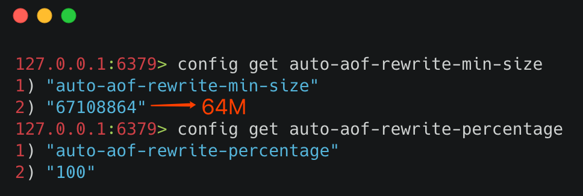

- 01 Redis 是如何执行的.md.html
- 02 Redis 快速搭建与使用.md.html
- 03 Redis 持久化——RDB.md.html
- 04 Redis 持久化——AOF.md.html
- 05 Redis 持久化——混合持久化.md.html
- 06 字符串使用与内部实现原理.md.html
- 07 附录：更多字符串操作命令.md.html
- 08 字典使用与内部实现原理.md.html
- 09 附录：更多字典操作命令.md.html
- 10 列表使用与内部实现原理.md.html
- 11 附录：更多列表操作命令.md.html
- 12 集合使用与内部实现原理.md.html
- 13 附录：更多集合操作命令.md.html
- 14 有序集合使用与内部实现原理.md.html
- 15 附录：更多有序集合操作命令.md.html
- 16 Redis 事务深入解析.md.html
- 17 Redis 键值过期操作.md.html
- 18 Redis 过期策略与源码分析.md.html
- 19 Redis 管道技术——Pipeline.md.html
- 20 查询附近的人——GEO.md.html
- 21 游标迭代器（过滤器）——Scan.md.html
- 22 优秀的基数统计算法——HyperLogLog.md.html
- 23 内存淘汰机制与算法.md.html
- 24 消息队列——发布订阅模式.md.html
- 25 消息队列的其他实现方式.md.html
- 26 消息队列终极解决方案——Stream（上）.md.html
- 27 消息队列终极解决方案——Stream（下）.md.html
- 28 实战：分布式锁详解与代码.md.html
- 29 实战：布隆过滤器安装与使用及原理分析.md.html
- 30 完整案例：实现延迟队列的两种方法.md.html
- 31 实战：定时任务案例.md.html
- 32 实战：RediSearch 高性能的全文搜索引擎.md.html
- 33 实战：Redis 性能测试.md.html
- 34 实战：Redis 慢查询.md.html
- 35 实战：Redis 性能优化方案.md.html
- 36 实战：Redis 主从同步.md.html
- 37 实战：Redis哨兵模式（上）.md.html
- 38 实战：Redis 哨兵模式（下）.md.html
- 39 实战：Redis 集群模式（上）.md.html
- 40 实战：Redis 集群模式（下）.md.html
- 41 案例：Redis 问题汇总和相关解决方案.md.html
- 42 技能学习指南.md.html
- 43 加餐：Redis 的可视化管理工具.md.html
- 捐赠
04 Redis 持久化——AOF
使用 RDB 持久化有一个风险，它可能会造成最新数据丢失的风险。因为 RDB 的持久化有一定的时间间隔，在这个时间段内如果 Redis 服务意外终止的话，就会造成最新的数据全部丢失。
可能会操作 Redis 服务意外终止的条件：
- 安装 Redis 的机器停止运行，蓝屏或者系统崩溃；
- 安装 Redis 的机器出现电源故障，例如突然断电；
- 使用
kill -9 Redis_PID等。
那么如何解决以上的这些问题呢？Redis 为我们提供了另一种持久化的方案——AOF。
1 简介
AOF（Append Only File）中文是附加到文件，顾名思义 AOF 可以把 Redis 每个键值对操作都记录到文件（appendonly.aof）中。
2 持久化查询和设置
1）查询 AOF 启动状态
使用 config get appendonly 命令，如下图所示：  其中，第一行为 AOF 文件的名称，而最后一行表示 AOF 启动的状态，yes 表示已启动，no 表示未启动。
其中，第一行为 AOF 文件的名称，而最后一行表示 AOF 启动的状态，yes 表示已启动，no 表示未启动。
2）开启 AOF 持久化
Redis 默认是关闭 AOF 持久化的，想要开启 AOF 持久化，有以下两种方式：
- 通过命令行的方式；
- 通过修改配置文件的方式（redis.conf）。
下面分别来看以上两种方式的实现。
① 命令行启动 AOF
命令行启动 AOF，使用 config set appendonly yes 命令，如下图所示：  命令行启动 AOF 的优缺点：命令行启动优点是无需重启 Redis 服务，缺点是如果 Redis 服务重启，则之前使用命令行设置的配置就会失效。
命令行启动 AOF 的优缺点：命令行启动优点是无需重启 Redis 服务，缺点是如果 Redis 服务重启，则之前使用命令行设置的配置就会失效。
② 配置文件启动 AOF
Redis 的配置文件在它的根路径下的 redis.conf 文件中，获取 Redis 的根目录可以使用命令 config get dir 获取，如下图所示：  只需要在配置文件中设置
只需要在配置文件中设置 appendonly yes 即可，默认 appendonly no 表示关闭 AOF 持久化。 配置文件启动 AOF 的优缺点：修改配置文件的缺点是每次修改配置文件都要重启 Redis 服务才能生效，优点是无论重启多少次 Redis 服务，配置文件中设置的配置信息都不会失效。
3 触发持久化
AOF 持久化开启之后，只要满足一定条件，就会触发 AOF 持久化。AOF 的触发条件分为两种：自动触发和手动触发。
1）自动触发
有两种情况可以自动触发 AOF 持久化，分为是：满足 AOF 设置的策略触发和满足 AOF 重写触发。其中，AOF 重写触发会在本文的后半部分详细介绍，这里重点来说 AOF 持久化策略都有哪些。 AOF 持久化策略，分为以下三种：
- always：每条 Redis 操作命令都会写入磁盘，最多丢失一条数据；
- everysec：每秒钟写入一次磁盘，最多丢失一秒的数据；
- no：不设置写入磁盘的规则，根据当前操作系统来决定何时写入磁盘，Linux 默认 30s 写入一次数据至磁盘。
这三种配置可以在 Redis 的配置文件（redis.conf）中设置，如下代码所示：
# 开启每秒写入一次的持久化策略
appendfsync everysec
小贴士：因为每次写入磁盘都会对 Redis 的性能造成一定的影响，所以要根据用户的实际情况设置相应的策略，一般设置每秒写入一次磁盘的频率就可以满足大部分的使用场景了。
触发自动持久化的两种情况，如下图所示：
2）手动触发
在客户端执行 bgrewriteaof 命令就可以手动触发 AOF 持久化，如下图所示：  可以看出执行完
可以看出执行完 bgrewriteaof 命令之后，AOF 持久化就会被触发。
4 AOF 文件重写
AOF 是通过记录 Redis 的执行命令来持久化（保存）数据的，所以随着时间的流逝 AOF 文件会越来越多，这样不仅增加了服务器的存储压力，也会造成 Redis 重启速度变慢，为了解决这个问题 Redis 提供了 AOF 重写的功能。
1）什么是 AOF 重写？
AOF 重写指的是它会直接读取 Redis 服务器当前的状态，并压缩保存为 AOF 文件。例如，我们增加了一个计数器，并对它做了 99 次修改，如果不做 AOF 重写的话，那么持久化文件中就会有 100 条记录执行命令的信息，而 AOF 重写之后，之后记录一条此计数器最终的结果信息，这样就去除了所有的无效信息。
2）AOF 重写实现
触发 AOF 文件重写，要满足两个条件，这两个条件也是配置在 Redis 配置文件中的，它们分别：
- auto-aof-rewrite-min-size：允许 AOF 重写的最小文件容量，默认是 64mb 。
- auto-aof-rewrite-percentage：AOF 文件重写的大小比例，默认值是 100，表示 100%，也就是只有当前 AOF 文件，比最后一次（上次）的 AOF 文件大一倍时，才会启动 AOF 文件重写。
查询 auto-aof-rewrite-min-size 和 auto-aof-rewrite-percentage 的值，可使用 config get xxx 命令，如下图所示： 
小贴士：只有同时满足 auto-aof-rewrite-min-size 和 auto-aof-rewrite-percentage 设置的条件，才会触发 AOF 文件重写。
注意：使用 bgrewriteaof 命令，可以自动触发 AOF 文件重写。
3）AOF 重写流程
AOF 文件重写是生成一个全新的文件，并把当前数据的最少操作命令保存到新文件上，当把所有的数据都保存至新文件之后，Redis 会交换两个文件，并把最新的持久化操作命令追加到新文件上。
5 配置说明
合理的设置 AOF 的配置，可以保障 Redis 高效且稳定的运行，以下是 AOF 的全部配置信息和说明。
AOF 的配置参数在 Redis 的配置文件中，也就是 Redis 根路径下的 redis.conf 文件中，配置参数和说明如下：
# 是否开启 AOF，yes 为开启，默认是关闭
appendonly no
# AOF 默认文件名
appendfilename "appendonly.aof"
# AOF 持久化策略配置
# appendfsync always
appendfsync everysec
# appendfsync no
# AOF 文件重写的大小比例，默认值是 100，表示 100%，也就是只有当前 AOF 文件，比最后一次的 AOF 文件大一倍时，才会启动 AOF 文件重写。
auto-aof-rewrite-percentage 100
# 允许 AOF 重写的最小文件容量
auto-aof-rewrite-min-size 64mb
# 是否开启启动时加载 AOF 文件效验，默认值是 yes，表示尽可能的加载 AOF 文件，忽略错误部分信息，并启动 Redis 服务。
# 如果值为 no，则表示，停止启动 Redis，用户必须手动修复 AOF 文件才能正常启动 Redis 服务。
aof-load-truncated yes
其中比较重要的是 appendfsync 参数，用它来设置 AOF 的持久化策略，可以选择按时间间隔或者操作次数来存储 AOF 文件，这个参数的三个值在文章开头有说明，这里就不再复述了。
6 数据恢复
1）正常数据恢复
正常情况下，只要开启了 AOF 持久化，并且提供了正常的 appendonly.aof 文件，在 Redis 启动时就会自定加载 AOF 文件并启动，执行如下图所示： 其中 DB loaded from append only file...... 表示 Redis 服务器在启动时，先去加载了 AOF 持久化文件。
小贴士：默认情况下 appendonly.aof 文件保存在 Redis 的根目录下。
持久化文件加载规则
- 如果只开启了 AOF 持久化，Redis 启动时只会加载 AOF 文件（appendonly.aof），进行数据恢复；
- 如果只开启了 RDB 持久化，Redis 启动时只会加载 RDB 文件（dump.rdb），进行数据恢复；
- 如果同时开启了 RDB 和 AOF 持久化，Redis 启动时只会加载 AOF 文件（appendonly.aof），进行数据恢复。
在 AOF 开启的情况下，即使 AOF 文件不存在，只有 RDB 文件，也不会加载 RDB 文件。 AOF 和 RDB 的加载流程如下图所示： 
2）简单异常数据恢复
在 AOF 写入文件时如果服务器崩溃，或者是 AOF 存储已满的情况下，AOF 的最后一条命令可能被截断，这就是异常的 AOF 文件。
在 AOF 文件异常的情况下，如果为修改 Redis 的配置文件，也就是使用 aof-load-truncated 等于 yes 的配置，Redis 在启动时会忽略最后一条命令，并顺利启动 Redis，执行结果如下：
* Reading RDB preamble from AOF file...
* Reading the remaining AOF tail...
# !!! Warning: short read while loading the AOF file !!!
# !!! Truncating the AOF at offset 439 !!!
# AOF loaded anyway because aof-load-truncated is enabled
3）复杂异常数据恢复
AOF 文件可能出现更糟糕的情况，当 AOF 文件不仅被截断，而且中间的命令也被破坏，这个时候再启动 Redis 会提示错误信息并中止运行，错误信息如下：
* Reading the remaining AOF tail...
# Bad file format reading the append only file: make a backup of your AOF file, then use ./redis-check-aof --fix <filename>
出现此类问题的解决方案如下：
- 首先使用 AOF 修复工具，检测出现的问题，在命令行中输入
redis-check-aof命令，它会跳转到出现问题的命令行，这个时候可以尝试手动修复此文件； - 如果无法手动修复，我们可以使用
redis-check-aof --fix自动修复 AOF 异常文件，不过执行此命令，可能会导致异常部分至文件末尾的数据全部被丢弃。
7 优缺点
AOF 优点
- AOF 持久化保存的数据更加完整，AOF 提供了三种保存策略：每次操作保存、每秒钟保存一次、跟随系统的持久化策略保存，其中每秒保存一次，从数据的安全性和性能两方面考虑是一个不错的选择，也是 AOF 默认的策略，即使发生了意外情况，最多只会丢失 1s 钟的数据；
- AOF 采用的是命令追加的写入方式，所以不会出现文件损坏的问题，即使由于某些意外原因，导致了最后操作的持久化数据写入了一半，也可以通过 redis-check-aof 工具轻松的修复；
- AOF 持久化文件，非常容易理解和解析，它是把所有 Redis 键值操作命令，以文件的方式存入了磁盘。即使不小心使用
flushall命令删除了所有键值信息，只要使用 AOF 文件，删除最后的flushall命令，重启 Redis 即可恢复之前误删的数据。
AOF 缺点
- 对于相同的数据集来说，AOF 文件要大于 RDB 文件；
- 在 Redis 负载比较高的情况下，RDB 比 AOF 性能更好；
- RDB 使用快照的形式来持久化整个 Redis 数据，而 AOF 只是将每次执行的命令追加到 AOF 文件中，因此从理论上说，RDB 比 AOF 更健壮。
8 小结
AOF 保存数据更加完整，它可以记录每次 Redis 的键值变化，或者是选择每秒保存一次数据。AOF 的持久化文件更加易读，但相比与二进制的 RDB 来说，所占的存储空间也越大，为了解决这个问题，AOF 提供自动化重写机制，最大程度的减少了 AOF 占用空间大的问题。同时 AOF 也提供了很方便的异常文件恢复命令： redis-check-aof --fix ，为使用 AOF 提供了很好的保障。
参考&鸣谢 https://redis.io/topics/persistence https://blog.csdn.net/qq_36318234/article/details/79994133 https://www.cnblogs.com/wdliu/p/9377278.html
© 2019 - 2023 Liangliang Lee. Powered by gin and hexo-theme-book.